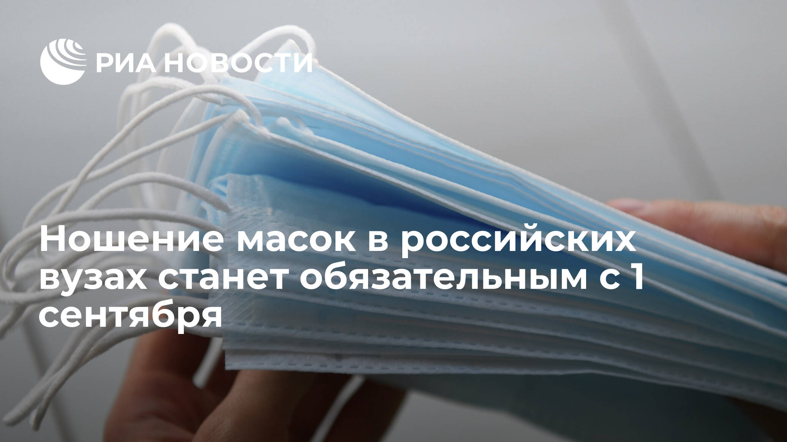
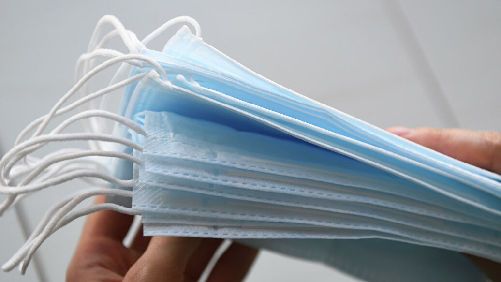
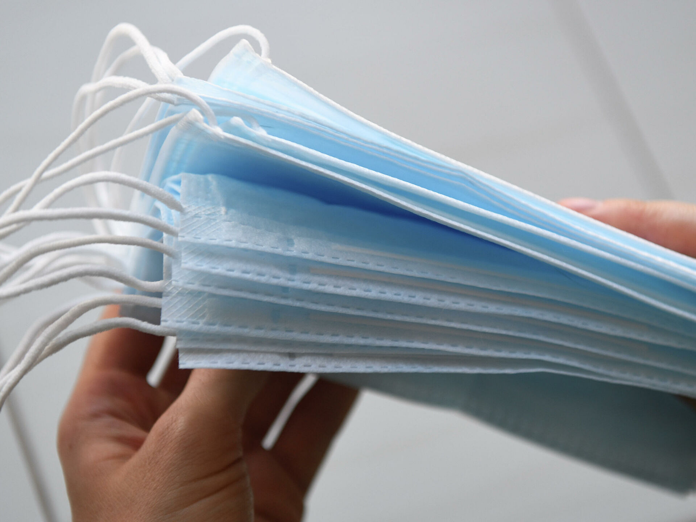
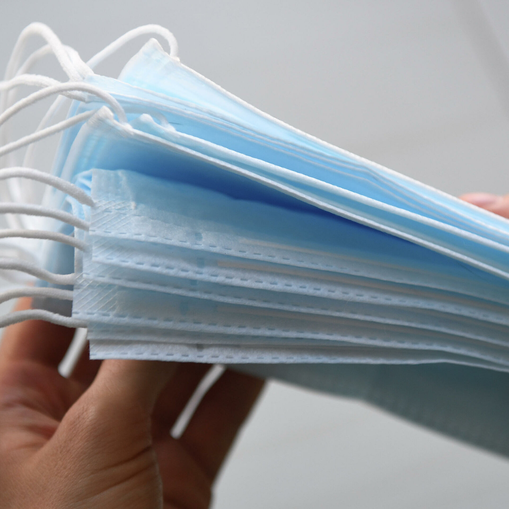

Ношение масок в российских вузах станет обязательным с 1 сентября

МОСКВА, 31 июл — РИА Новости.Ношение масок в вузах в новом учебном году станет обязательным требованием, исключение может быть сделано для тех, у кого подтверждено наличие антител к коронавирусу, сообщило Минобразования в телеграм-канале.
'Это позволит организовать учебный процесс, соблюдая правила профилактики новой коронавирусной инфекции', — сказал он.
При этом, по словам министра, обеспечить студентов и преподавателей масками должны университеты.Если у людей выявят антитела, они смогут посещать занятия без масок.Для этого нужно будет предоставить справку.При чтении лекций преподаватели могут снять маску.
Кроме того, все учебные корпуса вузов должны быть обеспечены системой термометрии для того, чтобы снизить риски заражения инфекцией.
Студенты из стран, с которыми налажено авиасообщение, по приезде в Россию должны будут соблюдать двухнедельный карантин и сдать тест на наличие вируса на 10-12-й день после прибытия — только после этого они могут быть допущены к занятиям.
Для тех, кто въехать в страну не сможет, вузы обеспечат доступ к учебным занятиям в онлайн-формате.Иногородним студентам, прибывающим из 'красной зоны' для того, чтобы приступить к обучению, также придется сдать тест на коронавирус.
В ходе совещания также затронули вопрос о дате начала нового учебного года.
'Вузы имеют право сдвинуть начало учебного года на два месяца.Однако 92 процента российских высших учебных заведений готовы начать учебный год с 1 сентября', — сказал Фальков.
Posted On: 2020-07-31T13:37:00



Content Date: 2020-07-31
Download Date: 2021-04-21
Document ID: L0C04AMOH